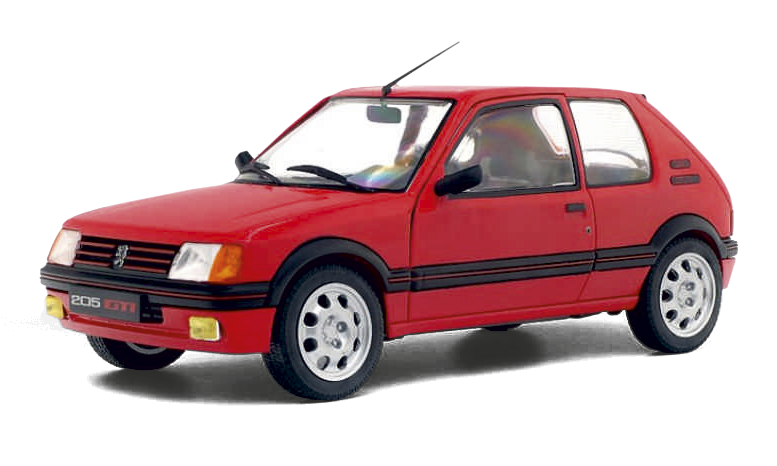
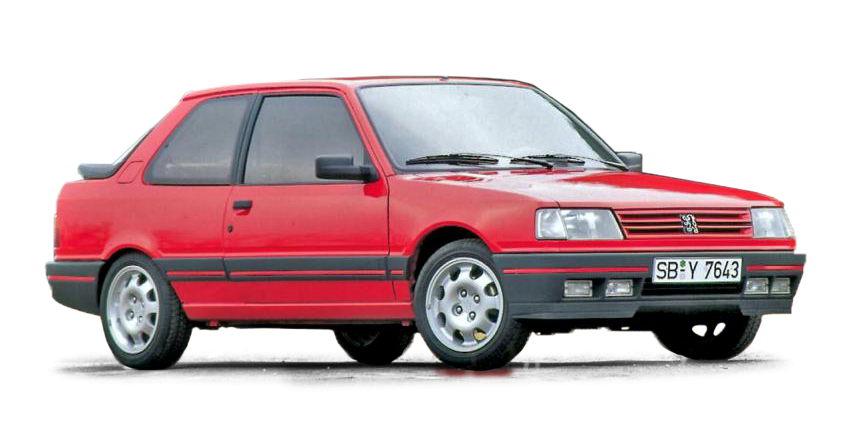
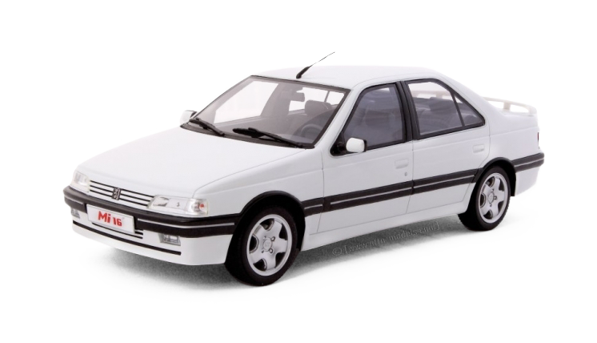
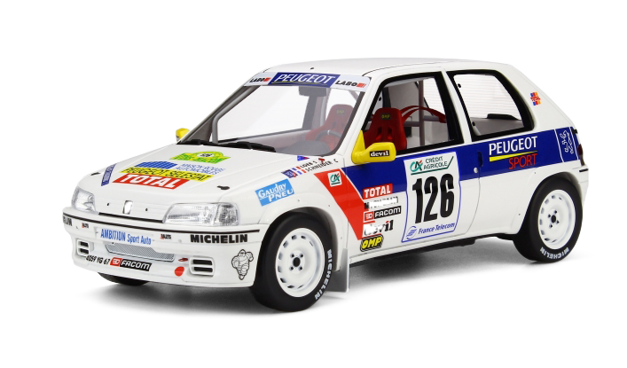
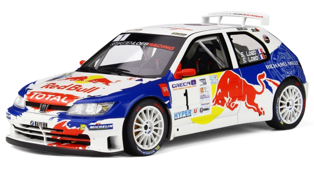
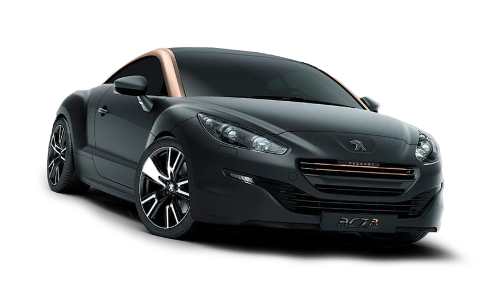
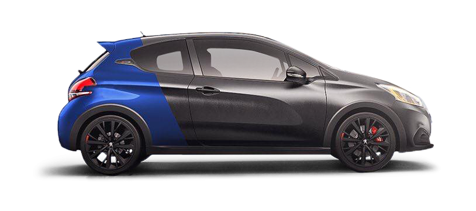
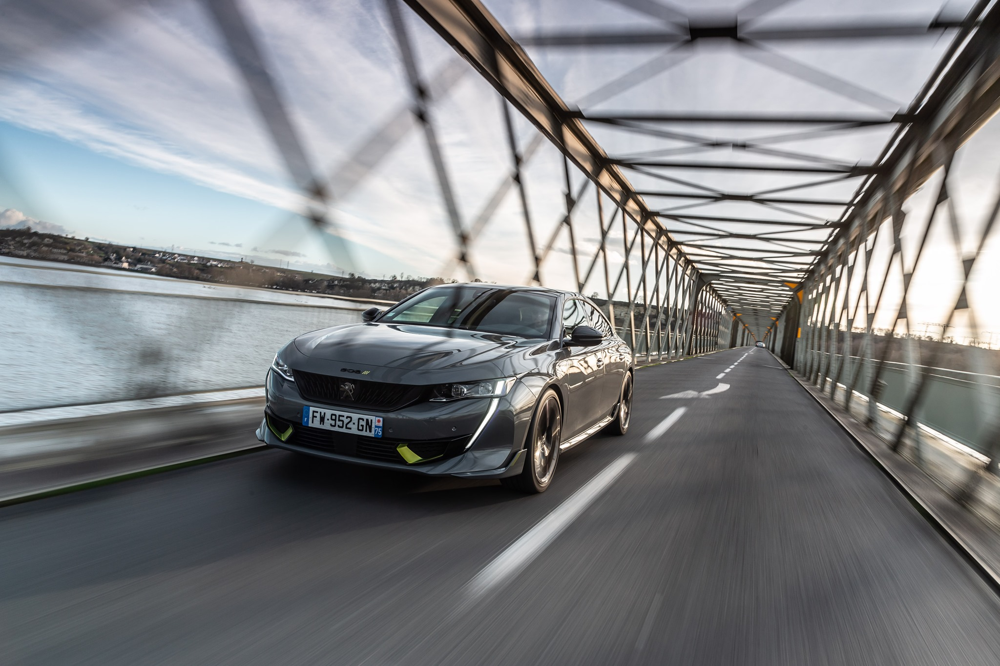

DE GTI A PSE
Peugeot, pioneros del alto rendimiento.
La línea temporal de la deportividad
No solo hablamos de coches, se trata de leyendas

205 GTI / 1984
(irrumpió con fuerza impulsado por un motor 1.6 litros de 105 CV. Más adelante, recibió la versión de 1.9 l y 130 CV. El 205 GTI fue una excelente base para la competición) 
309 GTI / 1986
(se lanzó con un motor de 1.9 litros y 130 CV y, en 1989, heredo el 1.9 l, 16 válvulas y 160 CV de potencia del Peugeot 405 Mi 16. Destacaba por su comportamiento y agilidad) 
405 MI 16 / 1987
(Con 160 CV y 1.185 kg de peso, rozaba los 220 km/h de velocidad punta. Se caracterizó por ser un coche cómodo, con mucho espacio para viajar, pero con prestaciones de GTI) 
106 RALLYE / 1994
(Dentro de su ligero peso con 816 kilos, se encontraba un motor de 1.3 litros con 98 CV que se entregaban a 7.200 rpm y 108 Nm de par máximo que llegaban al alcanzar las 5.400 vueltas) 
306 Maxi Kit Car / 1998
(Con tracción delantera y motor atmosférico, entregaba 300 cv a casi 10.000 rpm. Los Kit Car presentan regulaciones del modelo de serie para su adaptación en competiciones deportivas) 
RCZ / 2009
(En su momento, fue el Peugeot de calle más potente de la historia. Con un diseño elegante y eficiente a partes iguales, equipaba un motor de 1.6 litros con 260 CV) 
208 GTI / 2017
(Cuenta con el mismo motor que el 308 GTI, el 1.6 THP, pero con 208 CV de potencia. El urbano, pequeño, pero matón, destaca por sus cualidades dinámicas y carácter deportivo) 
Origen de PSE en los circuitos

Hablar de automovilismo es hablar de Peugeot. Pocas marcas en la historia tienen un palmarés tan laureado como el de la marca francesa. Con victorias en la París-Burdeos-París de 1895, las 500 Millas de Indianápolis, el Rally Dakar o las 24 Horas de Le Mans, Peugeot ha dejado su sello en las mejores competiciones del mundo del motor. Entre sus logros, la marca del león cuenta con cinco títulos de constructores y cuatro de pilotos en el Campeonato Mundial de Rallyes. También ha vencido en tres ocasiones las 24 Horas de Le Mans (1992, 1993 y 2009) y ahora prepara su regreso a la mítica prueba con los Hypercar en 2022. En el Rally Dakar, Peugeot se llevó la victoria en 1987 y 1988 con un Peugeot 205 Turbo 16, mientras en 1989 y 1990, hizo lo mismo con el Peugeot 405 Turbo 16. Posteriormente, la marca del león volvió al raid más duro del mundo en la edición 2015 con Carlos Sainz, Stéphane Peterhansel y Cyril Despres, utilizando un prototipo Peugeot 2008 DKR de tracción trasera. En 2016 y 2017, la victoria fue para Peterhansel y, en 2018, para Sainz Con el Peugeot 405 T16 la marca participó en la mítica carrera de Pikes Peak donde ganó en 1988 y en 1989. En 2013, Sebastien Loeb con un Peugeot 208 T16 ganó la carrera, imponiendo un nuevo récord en la prueba. Sacar el máximo partido a cada vehículo y a sus elementos mecánicos, han estado en el ADN del fabricante desde sus inicios. Por ello, la división deportiva de la marca ha sabido llevar toda la experiencia extraída en la competición a los modelos de calle. Desde el Peugeot 205 GTI, pasando por el 405 Mi 16, al RCZ R o el 208 GTI y, ahora, el 508 PSE (Peugeot Sport Engineered), que abre una nueva generación de vehículos electrificados radicales y prestacionales.
EL NUEVO PEUGEOT 508 PSE EN DATOS

360 CV – 265 kW – 520 Nm

De 0 a 100 km/h en 5,2 segundos *

Emisiones de 46 g/km de CO2 *
* Datos de la versión convencional.
Peugeot presenta: Una historia de sensaciones con 4 protagonistas únicos al volante del 508 PSE
Peugeot 508 PSE
Peugeot 508 PSE
Peugeot 508 PSE
La deportividad es híbrida o no será
La electrificación ha permitido a las marcas abrir un nuevo abanico de posibilidades en el ADN deportivo de los coches. Peugeot, consciente de ello, utiliza la hibridación como eje de los modelos más prestacionales de su gama. Así nace el Peugeot 508 PSE (Peugeot Sport Engineered), una berlina híbrida enchufable con la mecánica más potente de la historia del fabricante. Esta tecnología permite construir coches deportivos, a la par que eficientes, con bajas emisiones (46 g/Km de CO2 en el caso del 508) y una mecánica de lo más interesante. De entrada, el ‘corazón’ del modelo es un propulsor gasolina, turbo, de cuatro cilindros, 1.6 litros y 200 CV, que se combina con dos motores eléctricos. El primero de ellos, integrado en la transmisión automática de ocho marchas EAT8, ofrece 110 CV y mueve a las ruedas delanteras. El segundo, ubicado en el eje posterior, da 113 CV y se encarga de mover al eje posterior. ¿Y qué significan todos estos datos y motores? Que nos encontramos ante un modelo con una gran potencia (360 CV y 520 Nm de par motor), con varios propulsores, que permiten jugar con la tracción del modelo en función del momento, la circunstancias o el modo de conducción elegido. Para extraer la potencia máxima es necesario ir en el modo Sport, mientras que en el resto (Confort, Hybrid y 4WD) se dispondrá de 330 CV. Si optamos por el modo 100% eléctrico, la potencia será de 140 CV. Los motores eléctricos toman la energía de una batería de iones de litio de 11,5 kWh, ubicada bajo los asientos posteriores, que no resta ni espacio ni maletero al 508, a diferencia de otros modelos rivales. Por ello, la carrocería familiar cuenta con 530 litros y la convencional con 487 l. La tecnología híbrida abre una dicotomía de lo más peculiar. Gracias a sus características, es posible exprimir en una carretera de montaña sus cualidades dinámicas o, por el contrario, realizar una conducción ‘cero emisiones’ con los 42 kilómetros de autonomía eléctrica que homologa, según el ciclo WLTP. Cabe recordar que el Peugeot 508 PSE tiene unos datos prestacionales espectaculares: punta de 250 km/h (limitado electrónicamente), 0 a 100 km/h en 5,2 segundos o una recuperación de 80 Para que el ‘corazón’ del modelo saque a relucir todo su poder con una tracción óptima, Peugeot ha trabajado en más partes del vehículo. De entrada, el 508 PSE equipa discos de freno delanteros de 380 mm de diámetro y pinzas fijas de cuatro pistones con neumáticos de fábrica Michelin Pilot Sport 4S en medida 245/35 R20. La suspensión cuenta con ajuste más firme, los amortiguadores son de dureza variable (Confort, Hybrid y Sport) y se ha rebajado la altura de la carrocería: 10 milímetros en el eje delantero y 4 mm en el trasero. Mejoras que permiten exprimir el ADN híbrido del Peugeot 508 PSE que, gracias a la presencia de los tres motores que integra, más todas las tecnologías incorporadas, se sitúa como una berlina de referencia, con grandes cualidades dinámicas y prestaciones deportivas.